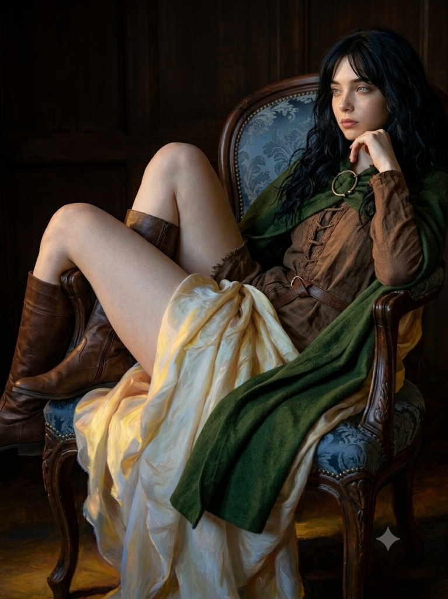
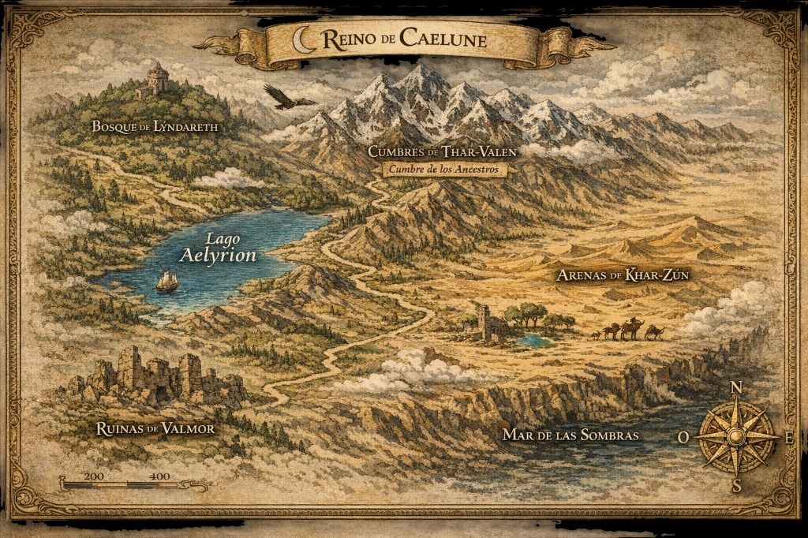

VALMOR
Un universo de fantasía oscura
PERSONAJES
Los que aún caminan entre cenizas. Cada alma porta una carga y un propósito olvidado.
Eira Vael
"Una advertencia viviente de lo que ocurre cuando la humanidad pacta con la oscuridad."
✦ Origen y la Caída de Ithos
Eira Vael es una guerrera y superviviente proveniente de un mundo de estética helénica (Ithos) que ya fue destruido por la entidad cósmica conocida como La Vigilia. Tras el asesinato de su hermano mayor a manos del cultista Kassander, Eira asume su pesada armadura de bronce para proteger a los débiles. Posteriormente, es arrancada de su realidad agonizante y traída al continente de Caelune mediante un ritual interdimensional realizado por Lyora, la Primera Portadora, bajo la guía de la deidad Velariel. En Caelune, Eira funciona como una advertencia viviente de lo que ocurre cuando la humanidad pacta con la oscuridad.
✦ Apariencia y Personalidad
Es una joven de complexión atlética, con piel muy pálida, cabello largo y oscuro, y penetrantes ojos celestes claros. Su presencia visual es la de una guardiana antigua que enfrenta horrores cósmicos con tecnología de hace dos mil años: combate con una armadura de bronce que incluye un yelmo corintio, grevas, un pesado escudo hoplita abollado y una lanza larga ceremonial. Psicológicamente es reservada, disciplinada, poco expresiva y extremadamente resiliente. Habiendo presenciado el fin del mundo una vez, vive con el terror constante de verlo repetirse. A pesar de su exterior frío y severo, esconde una profunda humanidad sepultada bajo años de guerra y trauma.
✦ Vínculo con Lyora y su Tragedia
Eira dedica su vida a proteger a Lyora, quien se convierte en la única persona capaz de devolverle algo de paz. Para la guerrera, Lyora representa la inocencia, la esperanza y la posibilidad de salvar a Caelune. Lamentablemente, el destino de Eira está marcado por el fracaso. Durante una emboscada liderada por los mercenarios conocidos como Los Portadores de la Ceniza, Eira es herida de gravedad e inmovilizada con cadenas. En un acto que la destruye mentalmente, es obligada a mirar cómo las élites del reino y la sacerdotisa Talea sacrifican a Lyora en un altar de piedra. Esta pérdida quiebra la poca humanidad que Eira conservaba, transformándola en una vengadora implacable que eventualmente caza y empala a Talea con furia ciega.
✦ El Fin de su Guardia (Su Legado)
El arco de Eira concluye cuando se encuentra con el caballero veterano Theos Kyrios y Sitara, la nueva portadora Luminar. Al ver que el espíritu de Lyora acompaña a Sitara, Eira comprende que el legado sigue vivo. Para asegurarse de que el nuevo protector sea digno, Eira desafía a Theos a un duelo a muerte, obligándolo a demostrar que su fuerza y voluntad son inquebrantables. Tras ser derrotada por la pesada espada de Theos, Eira cae al suelo agonizando, pero encuentra una paz absoluta y esboza una sonrisa genuina al ver a Lyora arrodillarse para tomar su mano.
Su historia física termina con un profundo respeto marcial: Theos y Sitara entierran su cuerpo bajo un túmulo de piedras rústicas y clavan en la tierra su lanza, su escudo y su yelmo de bronce, creando un monumento silencioso para que la guerrera de la antigua era por fin pueda descansar.

Lyora
"Una llama pequeña resistiendo contra la oscuridad."
✦ Origen y Misión
Conocida como "La Primera Portadora", es una figura central y trágica en la historia de Caelune, marcada desde su nacimiento por la sangre de Velariel, la antigua diosa nocturna de la libertad, la memoria y la imperfección humana. Lyora creció en una pequeña aldea que fue destruida no por las guerras habituales, sino en una cacería selectiva orquestada por las élites de Caelune y Los Portadores de la Ceniza para capturarla. Su familia se sacrificó entregando sus vidas para que ella pudiera escapar.
Tras quedar completamente sola, Velariel comenzó a manifestársele a través de visiones, sueños y voces, advirtiéndole sobre la inminente llegada de una entidad cósmica de control absoluto conocida como La Vigilia. Guiada por la deidad, Lyora realizó un antiguo ritual interdimensional para invocar a Caelune a Eira Vael, una guerrera proveniente de una realidad que ya había sido consumida por La Vigilia, con el propósito de que ambas advirtieran al mundo sobre el apocalipsis que se avecinaba.
✦ Personalidad y Vínculo con Eira
Físicamente, posee una presencia tranquila y casi etérea, con cabello oscuro y largo, piel pálida, ojos claros grisáceos y rasgos delicados. Viste ropas de peregrina desgastadas en tonos claros y marfil. A pesar de estar rodeada de horror y convertirse en una fugitiva constante, Lyora es profundamente compasiva, gentil, emocional y esperanzada, manteniendo la capacidad de creer en las personas incluso cuando no debería.
Esta pureza es el núcleo de su relación con Eira Vael. Mientras Lyora ve en la guerrera a una protectora, guía y símbolo de fortaleza, Eira encuentra en Lyora la inocencia y la única fuente de paz en un mundo decadente. Para Eira, Lyora representa la esperanza y la posibilidad de que Caelune aún pueda salvarse.
✦ Su Trágico Sacrificio
El destino de Lyora es el evento que quiebra la historia de Caelune. Durante una brutal emboscada en las montañas dirigida por Los Portadores de la Ceniza, Eira es inmovilizada con cadenas rituales y gravemente herida. En un acto de profunda empatía que sella su destino, Lyora corre desesperada ignorando el combate para intentar ayudar a su protectora herida, momento en el que es capturada.
Las familias más poderosas y la Orden del Nuevo Día, creyendo que ofrecer la sangre de Velariel a La Vigilia les otorgaría estabilidad y legitimidad divina, la encadenan en un gran altar de piedra a la intemperie. Allí, a manos de Talea (la Portadora de la Llama Oscura), Lyora es sacrificada ritualmente durante el atardecer mientras Eira es obligada a observar. Incluso en sus últimos momentos, aterrada sobre el altar, Lyora hace un esfuerzo por dedicarle una última sonrisa gentil a Eira para intentar consolarla. Su muerte marca el verdadero inicio de la caída espiritual del mundo.
✦ Su Legado (El Eco de Velariel)
A pesar de su muerte física, el impacto de Lyora trasciende en la historia. Su espíritu no desaparece, sino que se manifiesta como un "eco" vivo de los recuerdos y la voluntad de Velariel. Manteniendo su aspecto humano original y vestiduras de peregrina, esta aparición de Lyora es la encargada de presentarse ante Theos Kyrios, el caballero veterano, para despertarlo de su autoexilio.
El espíritu de Lyora guía a Theos a través de la espesura del bosque de Lýndareth hasta llevarlo frente a Sitara, la nueva portadora del linaje Luminar, asegurando así el relevo generacional para que la defensa del mundo continúe.
COLECCIÓN
Vestigios de una era desvanecida. Cada objeto guarda un fragmento de la verdad que el mundo olvidó.
Espada del Juramento Roto
Arma · Espada recta
Forjada para sellar un pacto entre dos reinos que ya no existen. La hoja lleva grabada una promesa en un idioma muerto. Quien la empuña siente el peso de un juramento que no le pertenece, pero que de algún modo lo reclama. Se dice que no puede ser soltada voluntariamente una vez desenvainada.
Anillo del Eco Perpetuo
Anillo · Accesorio arcano
Un aro de metal oscuro que resuena con una frecuencia inaudible. Su portador puede escuchar los últimos pensamientos de los caídos que murieron en el lugar donde se encuentra. Es una maldición disfrazada de don: el conocimiento que otorga erosiona la cordura como el agua erosiona la piedra.
Fragmento de la Primera Llama
Reliquia · Objeto clave
Un cristal incandescente que nunca se enfría. Contiene la esencia de la hoguera primordial que dio vida al mundo antes de la Calamidad. Los eruditos creen que reunir todos los fragmentos podría reignir la llama original, o destruir lo que queda del mundo por completo.
Ceniza de Hueso Sacro
Consumible · Material restaurador
Polvo gris extraído de los restos de un santo olvidado. Al ser inhalado, restaura brevemente la vitalidad, pero el usuario experimenta fragmentos de la memoria del difunto. Algunos se vuelven adictos no por la curación, sino por los recuerdos ajenos que les permiten escapar de los propios.
Arco del Crepúsculo Eterno
Arma · Arco largo
Tallado de la madera de un árbol que creció en el punto exacto donde la luz y la sombra se encuentran. Sus flechas no perforan la carne; perforan la voluntad. Los alcanzados por ellas no mueren: simplemente dejan de desear vivir.
Sello del Rey Sin Nombre
Anillo · Sello real
El anillo de un monarca cuyo nombre fue borrado de toda crónica y toda piedra. Portarlo otorga una autoridad inexplicable sobre las sombras, pero atrae la atención de entidades que habitan en los rincones olvidados del mundo. El metal está tibio al tacto, como si aún recordara el dedo que lo portó.
Máscara del Oráculo Mudo
Reliquia · Máscara ceremonial
Una máscara de porcelana sin abertura para la boca. Perteneció a un vidente que se arrancó la lengua para no revelar lo que había visto. Quien la usa puede percibir verdades ocultas, pero pierde la capacidad de hablar mientras la porte. La verdad, al parecer, exige silencio.
Elixir de Sombra Líquida
Consumible · Poción oscura
Un líquido negro y denso embotellado en cristal opaco. Al beberlo, el usuario se vuelve invisible a la luz, existiendo momentáneamente solo en la oscuridad. El efecto dura apenas unos instantes, pero quienes lo usan con frecuencia reportan que la oscuridad empieza a sentirse como un hogar.
DESBLOQUEAR
Pronuncia una runa ancestral para disipar la niebla y quebrar los sellos que ocultan la memoria perdida de Valmor.
◇ Reliquias y Códices Sellados
3 PergaminosCódice de la Caída de Ithos
Sellado por el lamento de la Vigilia. Solo la invocación del mundo helénico puede quebrar este pacto de silencio.
El Juramento de Velariel
Las últimas palabras de la Diosa Nocturna de la memoria antes de fragmentar su espíritu en los bosques de Caelune.
Tratado de la Llama Oscura
Crónicas prohibidas de la Orden del Nuevo Día y el ritual secreto que selló el destino de la Primera Portadora.
MAPA DE VALMOR
Topografía de un continente fracturado. Selecciona los fuegos encendidos para revelar los santuarios y vestigios conocidos.
